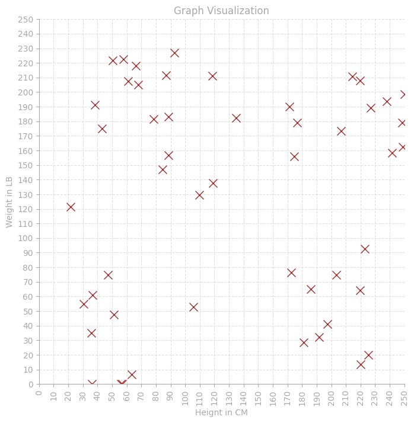
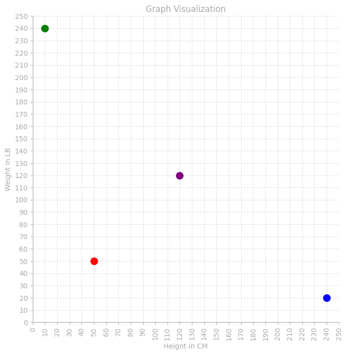
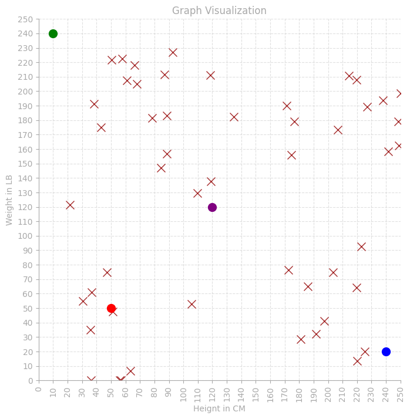
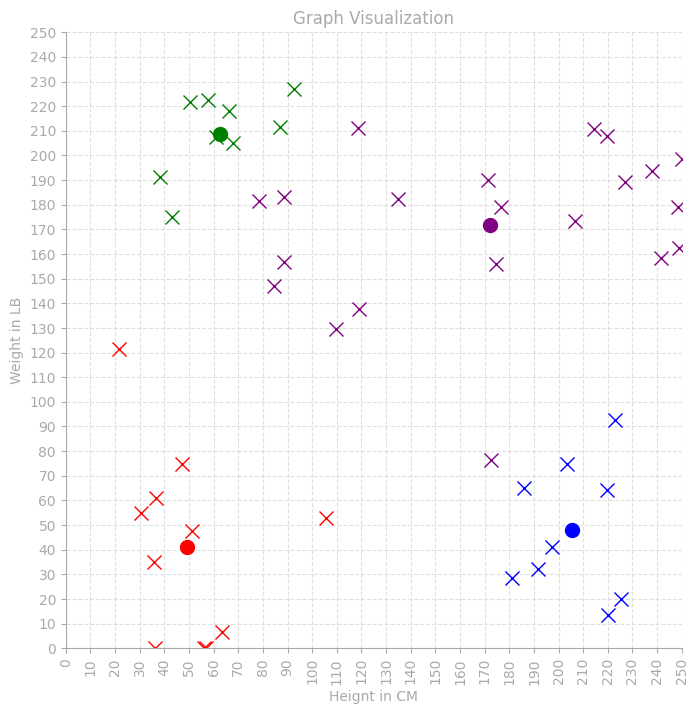
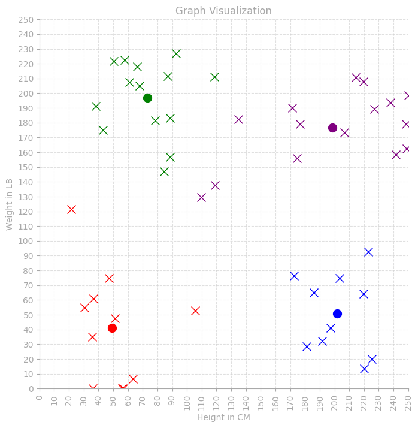
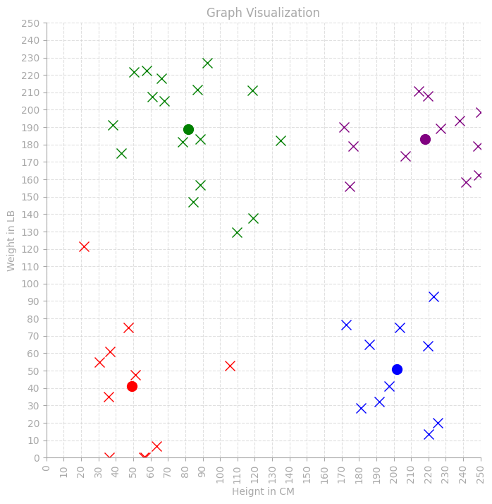

K-Means Clustering
First Encounter
While reading Professor Wencen Wu's paper Reinforcement learning-based dynamic field exploration and reconstruction using multi-robot systems for environmental monitoring, I came across the term "k-means clustering."
What is K-Means Clustering?
K-means clustering is an algorithmic way of organizing unlabeled data into a certain number of clusters, based on the similarity between different data points.
Implementation Algorithm
To do this (for a dataset of 2 dimensions) you need to execute the following steps:
- Pick the number of centroids (number of clusters) and a random location for each of the centroids
- Assign each data value to its nearest centroid
- Recenter the centroid based on the points associated with it (average "x" and "y" values)
- Repeat this loop until the location of the centroid no longer changes
Implementation
First, a helper function to render a graph of the data:
import matplotlib.pyplot as plt
import matplotlib.patches as mpatches
def render_graph(data):
"""
Renders a graph based on an array of objects with x, y, shape, and color attributes.
Args:
data (list): A list of dictionaries, where each dictionary represents an object
with 'x', 'y', 'shape' (circle or cross), and 'color' (red, green,
blue, yellow, black) attributes.
Returns:
None
"""
plt.close('all')
fig, ax = plt.subplots(figsize=(8, 8))
ax.set_facecolor('white')
ax.set_xlim(0, 250)
ax.set_ylim(0, 250)
ax.set_xticks(range(0, 251, 10))
ax.set_yticks(range(0, 251, 10))
ax.spines['left'].set_color('darkgrey')
ax.spines['bottom'].set_color('darkgrey')
ax.spines['right'].set_visible(False)
ax.spines['top'].set_visible(False)
ax.tick_params(axis='x', colors='darkgrey')
ax.tick_params(axis='y', colors='darkgrey')
for obj in data:
x = obj['x']
y = obj['y']
shape = obj['shape']
color = obj['color'].lower()
marker = ''
if shape == 'circle':
marker = 'o'
elif shape == 'cross':
marker = 'x'
else:
print(f"Warning: Unknown shape '{shape}'. Skipping point at ({x},{y})")
continue
ax.plot(x, y, marker=marker, color=color, markersize=10, linestyle='')
plt.xlabel('Height in CM', color='darkgrey')
plt.ylabel('Weight in LB', color='darkgrey')
plt.title('Graph Visualization', color='darkgrey')
plt.grid(True, linestyle='--', alpha=0.7, color='lightgray')
plt.gca().set_aspect('equal', adjustable='box')
plt.xticks(rotation=90)
plt.show()Next, load the dataset and plot the raw points:
from google.colab import drive
drive.mount('/content/drive')
import pandas as pd
file_path = '/content/drive/MyDrive/colab_notebooks/sample_data/kmeans-tshirt/kmeans_dataset.csv'
df_tshirt_data = pd.read_csv(file_path)
persons = []
for index, row in df_tshirt_data.head(50).iterrows():
person = dict(x=row['x'].item(), y=row['y'].item(), shape='cross', color='brown')
persons.append(person)
render_graph(persons)
Next, create four centroids at fixed starting positions:
centroids = []
centroid1 = {'x': 50, 'y': 50, 'shape': 'circle', 'color': 'red'}
centroid2 = {'x': 240, 'y': 20, 'shape': 'circle', 'color': 'blue'}
centroid3 = {'x': 10, 'y': 240, 'shape': 'circle', 'color': 'green'}
centroid4 = {'x': 120, 'y': 120, 'shape': 'circle', 'color': 'purple'}
centroids.append(centroid1)
centroids.append(centroid2)
centroids.append(centroid3)
centroids.append(centroid4)
render_graph(centroids)
Then, associate each point with its nearest centroid and recenter the centroids based on their assigned points:
def nearest_centroid_color(person):
least_dist = 125000
least_dist_color = ''
for index, centroid in enumerate(centroids):
distance = ((centroid["x"] - person["x"])**2 + (centroid["y"] - person["y"])**2)**0.5
if distance < least_dist:
least_dist = distance
least_dist_color = centroid["color"]
return least_dist_color
def assign_color_to_person():
for person in persons:
closest_centroid_color = nearest_centroid_color(person)
person["color"] = closest_centroid_color
def relocate_centroids():
for centroid in centroids:
count = 0
sum_x = 0
sum_y = 0
for person in persons:
if person["color"] == centroid["color"]:
count += 1
sum_x += person["x"]
sum_y += person["y"]
if count != 0:
centroid["x"] = sum_x / count
centroid["y"] = sum_y / countFinally, iterate the algorithm, reassigning points and recentering the centroids each round:
print("initial: ")
render_graph(persons + centroids)
def kmeans_clustering():
count = 1
while count <= 3:
print("iterations: " + str(count))
assign_color_to_person()
relocate_centroids()
render_graph(persons + centroids)
count += 1
kmeans_clustering()Results



